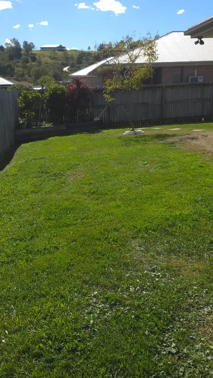
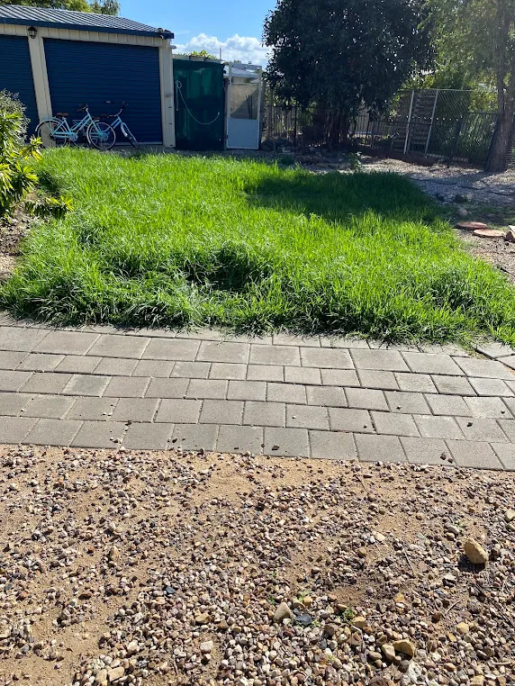
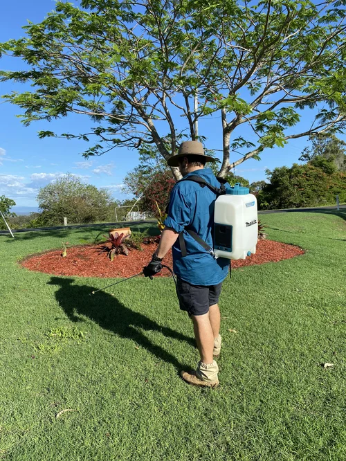

Hedge Trimming Laidley — Sharp Lines, Dense Screens
Shaping, reduction and ongoing maintenance for privacy screens, driveway hedges and formal borders across the Lockyer Valley.
Cutting for Density, Not Just Shape
Hedge trimming in Laidley is about more than taking the top off. A well-maintained hedge is cut so light reaches the lower foliage, which keeps the base dense and the screen solid. Cut it flat-sided or wider at the top and the bottom thins out, leaving the gappy, leggy look that ruins a privacy screen.
We taper hedges slightly — marginally wider at the base than the top — so sunlight reaches the whole face. We also cut back into the growth rather than skimming the tips, which is what encourages branching and thickens the screen over time. Whether it's murraya, lilly pilly, photinia or viburnum, the same principle drives every hedge trimming job we take on in Laidley and the surrounding towns.

Signs Your Hedge Needs Work
- Thin, woody bare patches at the base with foliage only near the top
- The hedge grown wider at the top than the bottom, shading out its own lower growth
- Growth pushing across paths, driveways, windows or over a neighbour's boundary
- An uneven, wandering top line that draws the eye for the wrong reasons
- Gaps in what's meant to be a privacy screen
- Dead or diseased sections that haven't been cut out
How We Trim
-
STEP 01
Assess the species and condition
Different plants tolerate different levels of cutback, and timing matters for flowering varieties.
-
STEP 02
Set the lines
We agree the target height, width and profile before starting, using string lines on formal hedges for a true finish.
-
STEP 03
Cut the faces first, then the top
Working sides before the top gives a cleaner, more accurate final line.
-
STEP 04
Taper the profile
So the base sits slightly wider than the crown and lower foliage keeps its light.
-
STEP 05
Clear and remove
All clippings raked, blown down and taken off site.
Why Book Us
- Species-appropriate hedge trimming — we don't cut a lilly pilly like a murraya
- Straight, level lines using string guides on formal and driveway hedges
- Clippings removed as standard, not left in a pile
- Fully insured — public liability cover including work at height
- Rated 5.0 on Google across 25 reviews from Lockyer Valley property owners
Recent Hedge Projects in Laidley and Surrounds
Screening, formal and boundary hedges we've shaped recently around the region.




Where We Work
We trim hedges across Laidley, Plainland, Gatton, Regency Downs, Hatton Vale and Kensington Grove. Lilly pilly and murraya screens are everywhere through the Lockyer Valley, and both put on serious growth through our warm, wet summers — which is why most properties here need two to three cuts a year to hold a sharp line.
Beds, borders and mulch around those hedges are covered under garden maintenance.
Frequently Asked Questions
How much does hedge trimming cost in Laidley?
Pricing depends on hedge length, height and how far it's been left to grow. Overgrown hedges needing major reduction cost more on the first visit, then drop to standard maintenance rates afterwards. You get a fixed figure before we start.
How long does hedge trimming take?
A single residential hedge usually takes one to two hours including clean-up and clipping removal. Long boundary screens or a full property of hedging can run half a day or more, particularly where access requires ladders or elevated platforms. A first cut on something badly overgrown always takes longer than the maintenance visits that follow it, because we're establishing the profile from scratch.
How often should hedges be trimmed?
Two to three times a year suits most hedges in the Lockyer Valley, with the main cut in late spring or early summer after the growth flush. Formal hedges where you want crisp lines year-round benefit from three or four visits.
Can an overgrown hedge be brought back?
Usually yes, though it takes patience. Hard reduction is done in stages across one to two seasons so the plant isn't shocked and can regenerate foliage on the cut faces. Some species regrow readily from bare wood; others need a gentler, staged approach.
What are the signs a hedge has been trimmed badly?
Bare woody legs with foliage only up top, sides that flare outward toward the crown, and torn rather than cleanly cut leaves. Ragged, browning leaf edges a week after trimming indicate blunt blades crushing the foliage instead of slicing it.
Do you remove the clippings?
Yes. Raking, blowing down and removing all clippings is included as standard on every hedge job we do around Laidley and Gatton. You're left with a clean finish rather than a green waste pile to deal with yourself.
Get Your Hedges Back in Line
Whether it's a single driveway hedge or a full property of screening, we'll quote it and get it sharp.